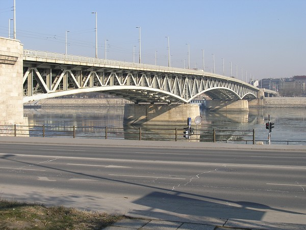

Petőfi-híd
A Petőfi híd (1937-től 1945-ig: Horthy Miklós híd) Budapest egyik Duna-hídja.
1933–37 között építették, a pesti (a mai Budapestnek a Duna bal (keleti) partján fekvő részét),
és budai körút déli szakaszainak villamos- és gépjárműforgalmát vezeti át a Duna felett. Hossza 378 m,
feljárókkal együtt 514 m. Szélessége 25,6 m. A híd pesti oldalán a Boráros tér, illetve a budai végén a Goldmann György tér találhatóak.
Sávok száma: 2×2 + villamos.
